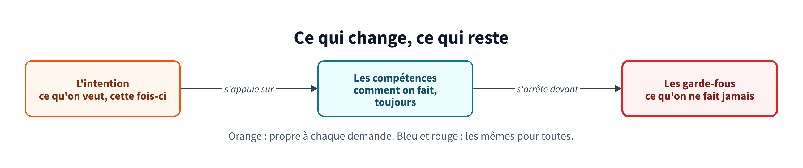
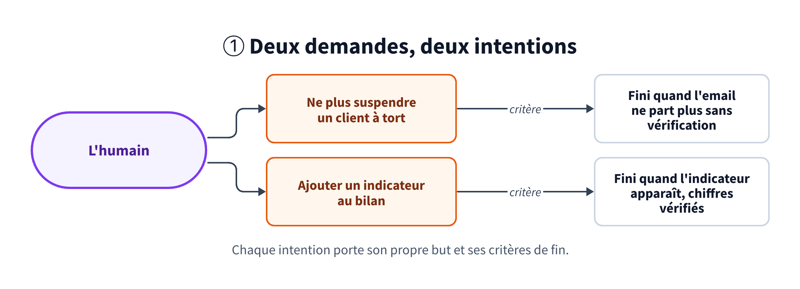
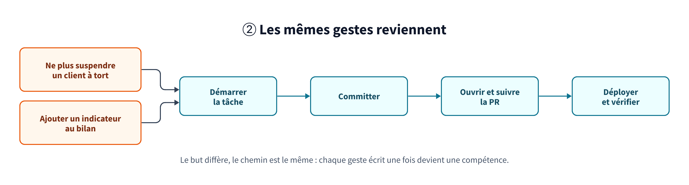
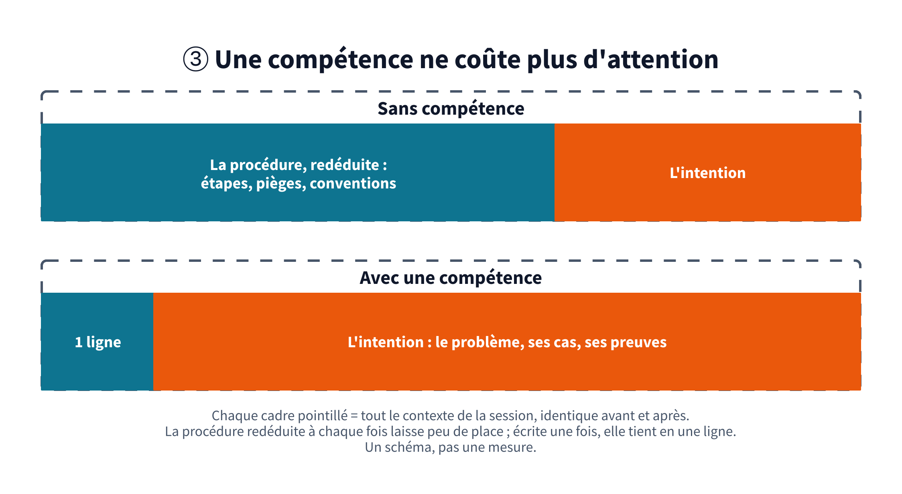
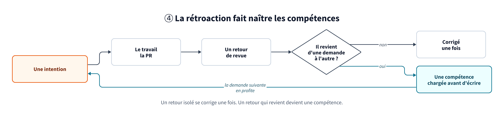
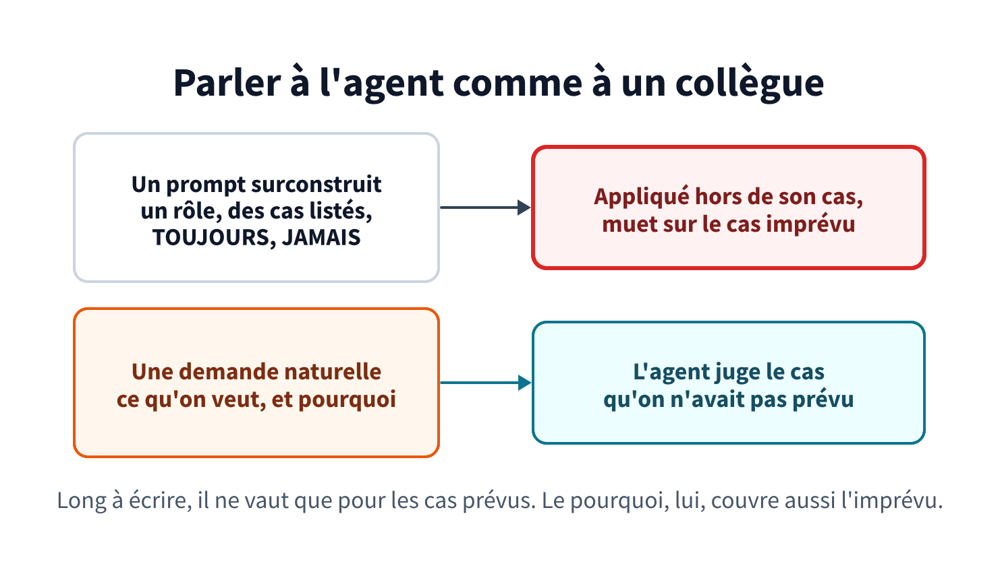

Aperçu Ce module n'est pas encore publié : il n'apparaît pas dans le sommaire et ne se lit que par ce lien.
Module 3 · Intentions et compétencesDes intentions qui changent, des compétences qui restent
Chaque demande faite à un agent porte une intention différente. Les gestes pour la mener à bien, eux, sont presque toujours les mêmes : démarrer la tâche, committer, ouvrir la PR, déployer. Ces gestes sont des compétences. On les écrit une fois, à partir des retours qui reviennent, on les range dans le dépôt, et elles servent à l'identique pour un humain comme pour un agent autonome, quelle que soit l'intention.
Le problème de départ
Corriger un email parti à tort, ajouter un indicateur au bilan, diagnostiquer une alerte : chaque demande avait son intention, et pourtant on réexpliquait à l'agent les mêmes choses à chaque fois. Comment démarrer une tâche, comment committer, comment ouvrir une PR, où déployer. Chaque développeur avait réglé son outil sur son poste, hors du dépôt, et les améliorations restaient locales : personne n'apprenait qu'une procédure avait changé. Quant à un agent qui tourne ailleurs que sur le poste, il n'avait rien de tout ça.
On a fini par séparer ce qui change d'une demande à l'autre, l'intention, de ce qui ne change pas : les compétences, qui disent comment faire, et les garde-fous (module 4), qui disent ce qu'on ne fait jamais.

De l'intention à la compétence
On y est arrivé en 4 étapes.
1. L'intention change à chaque demande
Une intention, c'est ce qu'on veut obtenir maintenant, sur ce travail-là. Elle tient en une phrase : « Quand un client en cours d'installation voit ses identifiants refusés, je veux qu'on vérifie avant de suspendre son intégration, pour ne plus lui envoyer d'email à tort. » Elle porte un but, et des critères qui disent quand c'est fini. C'est le gabarit de tâche de notre culture de l'écrit, et c'est le seul texte qu'un humain devrait avoir à écrire pour lancer le travail.
Parce que c'est le seul, cette parole doit être impeccable, au sens du premier des Quatre accords toltèques de Don Miguel Ruiz : dire exactement ce qu'on veut dire. Un mot flou (« l'email », « le client », « corrige vite ») laisse plusieurs lectures possibles, et l'agent en choisit une avec aplomb, sans signaler qu'il y en avait d'autres. Le nom exact de l'objet, le cas précis et un critère vérifiable lèvent l'ambiguïté avant la première ligne de code, là où elle coûte le moins cher.

2. Les mêmes gestes reviennent
Posez ces 2 intentions côte à côte et regardez ce qu'elles demandent vraiment. Le but diffère, le chemin est le même : démarrer la tâche sur sa branche, committer, ouvrir la PR et la suivre jusqu'au merge, déployer, vérifier. Ils tiennent à la façon dont l'équipe travaille, quel que soit le but.
Une compétence, c'est l'un de ces gestes écrit une fois : ses étapes, ses règles, les pièges déjà rencontrés. On la range dans un skill, une procédure que l'agent charge quand il en a besoin, quelle que soit l'intention qui l'y amène.

3. Une compétence ne coûte plus d'attention
La pédagogie a un nom pour ce mécanisme. La théorie de la charge cognitive, formulée par le psychologue John Sweller en 1988, part d'un constat : la mémoire de travail ne manipule que quelques éléments à la fois. Le débutant qui résout un problème y entasse tout, la procédure comme le problème. L'expert a automatisé la procédure en un « schéma » rangé en mémoire à long terme : elle ne lui coûte presque plus rien, et sa mémoire de travail reste libre pour ce qui est nouveau. Pour Sweller, c'est le but même de l'enseignement : construire ces schémas, puis les automatiser.
Un agent fonctionne de la même façon, avec son contexte à la place de la mémoire de travail. Sans skill, il redéduit la procédure à chaque session, et cette déduction occupe son contexte et l'attention de celui qui relit. Avec un skill, la procédure tient en une ligne de description jusqu'au moment où elle sert. Le contexte reste à l'intention, la seule partie qui change. C'est la même économie que pour l'attention humaine (module 1).

4. La rétroaction fait naître les compétences
Une compétence ne s'écrit pas à l'avance, sur une liste de bonnes pratiques. Elle naît d'un retour qui revient. La revue remonte la même remarque sur 3 PR qui n'ont rien à voir, un déploiement se trompe 2 fois de la même façon : ce retour ne dépendait d'aucune intention, il devient une compétence, chargée avant d'écrire plutôt que corrigée après. Un retour isolé, lui, se corrige une fois et s'oublie.
La botanique connaît cette boucle. Une plante qu'on fléchit régulièrement, par le vent ou à la main, pousse moins haut et épaissit sa tige : c'est la thigmomorphogenèse, nommée par le physiologiste Mark Jaffe en 1973. Dans ses expériences, frotter la tige quelques secondes, 1 ou 2 fois par jour, suffisait à freiner sa croissance en hauteur. La contrainte qui revient finit inscrite dans la structure de la plante, comme le retour qui revient finit inscrit dans les compétences de l'équipe.

Parler à l'agent comme à un collègue
Une intention se dit comme on la dirait à un collègue : naturellement, avec ce qu'on veut et pourquoi on le veut. On a tous été tentés par l'inverse, le prompt surconstruit, avec un rôle à endosser, une liste de cas et des TOUJOURS et des JAMAIS en majuscules. Il est long à écrire, au point qu'on repousse la demande, et il ne vaut que pour les cas qu'on a pensé à lister. Un collègue qui recevrait une telle note s'en étonnerait. Un modèle récent, lui, l'applique à la lettre, y compris là où elle n'a pas été pensée.
Parler naturellement ne veut pas dire parler vague : le ton est celui d'une conversation, le sens reste impeccable. La phrase porte le but, la raison et le critère de fin, comme à l'étape 1, et l'agent trouve le reste dans les compétences. Elle peut même se dicter : l'agent retire les hésitations de l'oral et garde l'intention (module 1).

Enseigner des règles de jugement
Ce qui vaut pour une demande vaut pour les instructions permanentes, celles des fichiers d'instructions de projet et des skills. On y enseigne des règles de jugement, comme on formerait un collègue, plutôt que des instructions précises à exécuter. Les modèles récents suivent les consignes à la lettre : une règle absolue, écrite en majuscules et répétée 3 fois, finit appliquée hors de son cas, et une liste de cas finit toujours par en oublier un. Une intention bien expliquée couvre aussi les cas qu'on n'avait pas prévus.
Le guide de prompting d'Anthropic pour ses modèles récents va dans ce sens. Il conseille d'expliquer pourquoi une consigne compte, et de remplacer « CRITICAL: You MUST use this tool when... » par un simple « Use this tool when... » : ces modèles réagissent davantage aux instructions, et le ton appuyé les fait déclencher à tort.
- Dire pourquoi. Le contexte et la raison d'une consigne permettent au modèle de reconnaître le cas qui ressemble sans être identique, et celui qui ressemble sans être concerné.
- Donner le compromis, pas seulement la règle. « Préférer X, sauf quand Y coûte plus cher » laisse le modèle trancher ; « toujours X » le force à se tromper le jour où Y arrive.
- Garder l'absolu pour l'irréversible. Une écriture en prod, une suppression, un secret : là, une interdiction nette et un garde-fou exécutable (module 4). Partout ailleurs, du jugement.
- Une consigne qui ne change rien se retire. Si le modèle le fait déjà de lui-même, la ligne coûte du contexte à chaque tour sans rien apporter.
Nos fichiers CLAUDE.md sont écrits en prose, et chaque règle y vient avec sa raison. « Toute décision qui revient à l'humain passe par un formulaire » est suivi de son pourquoi : une liste de questions en fin de message se perd quand la réponse est longue, et oblige à répondre en rédigeant. Fin septembre, au passage à la génération Claude 5, nous avons réécrit ces fichiers dans cet esprit, et retiré au passage les commandes, chemins et tables cités qui n'existaient plus, chacun vérifié contre le code.
Les briques du harnais
| Brique | Ce qu'elle porte | Règle d'écriture |
|---|---|---|
| Instructions de projet | Ce qui ne se voit pas dans le code et qui a déjà mordu. | Court, par zone du code. Pas de redite de ce que le code ou l'historique disent déjà. |
| Procédures (skills) | Un chemin critique écrit une fois : démarrer une tâche, committer, piloter une PR, déployer, diagnostiquer. | Une description qui dit quand s'en servir. Les sessions autonomes sont obligées de passer par elle. |
| Règles ciblées | Des contrats chargés seulement quand on touche certains chemins. | Liées à un motif de fichiers, pour ne pas polluer le contexte. |
| Permissions et hooks | Ce que l'agent peut faire sans demander, et les garde-fous (module 4). | Autonomes par périmètre, validés en CI. |
| Connecteurs | Les outils externes disponibles dans le périmètre. | Restreints au périmètre : pas d'accès à la base analytique dans une session applicative. |
Une quarantaine de skills Claude Code dans le monorepo : une douzaine partagés à la racine (commit, cycle de vie d'une PR, démarrage d'une tâche, rédaction de tickets, plan relu en ligne, création de skills), une quinzaine propres à l'app (événements de domaine, commandes, routes, glossaire métier, tâches de fond), une dizaine propres à la data platform (déployer, lancer un workflow, smoke test, surveiller, diagnostiquer). Plus des skills d'écriture hors dépôt : retirer les tics d'écriture IA, formater pour Slack, vulgariser un incident.
Ce qui marche
- Un skill par chemin critique, et un seul chemin. Une PR qui peut s'ouvrir de 3 façons donnera 3 comportements.
- Le même harnais partout. La machine jetable d'un agent charge exactement la même configuration que le poste du développeur : une amélioration profite aux deux.
- Mesurer qu'un skill aide. On note et on compare plusieurs exécutions avec et sans le skill, car une modification qui « a l'air mieux » ne l'est pas toujours.
- Un skill qu'il faut penser à appeler finit oublié. Un hook qui lit la demande peut le charger de lui-même, par exemple un skill de style dès qu'on rédige pour la messagerie. Une détection par motifs laisse quand même passer certaines formulations.
- Auditer les instructions quand le modèle change. Une consigne écrite pour le modèle précédent vieillit en silence : une commande, un chemin ou une cible cités qui n'existent plus, une façon de forcer un appel d'outil que le nouveau modèle refuse. Chaque affirmation de l'audit se vérifie contre le code avant d'être appliquée.
Un contexte propre
Plus le contexte d'une session grossit, plus l'agent se disperse : il oublie une consigne du début, mélange des pistes déjà abandonnées, et chaque tour coûte plus cher. Disposer d'une grande fenêtre de contexte ne justifie pas de la remplir.
- Compacter bien avant la limite, et parfois repartir d'une session neuve plutôt que de compacter.
- Déléguer les lectures larges à des agents qui ne rendent que leur conclusion.
- Voir venir la limite : le remplissage du contexte et les quotas d'usage affichés en permanence, pour ne pas être coupé au milieu d'une tâche.
- Une PR suivante, une session suivante. La session qui termine la première écrit la tâche de la suivante pendant qu'elle a tout le contexte. Cette tâche démarre dans son propre espace, sur une branche empilée sur la précédente pour éviter les conflits.
Opus avec la fenêtre d'un million de tokens, et l'autocompaction réglée vers 400 000 (autoCompactWindow). Une statusline d'une cinquantaine de lignes de shell affiche modèle, dépôt, branche, contexte et quotas sur 5 h et 7 jours. Pour la PR suivante, odette-start-task lancé depuis la session de la première.
Faire circuler les changements
Versionner le harnais ne sert pas à grand-chose si personne ne sait qu'il a bougé.
- Des notes de version hebdomadaires des tâches d'outillage livrées. en cours
- Chaque développeur relit le diff de sa configuration locale de la semaine et propose ce qui mérite d'être partagé. en cours
- Un canal réservé aux astuces, une par message, discutée en fil. Celles que l'équipe adopte migrent dans le dépôt. en place
À reprendre
- Écrivez l'intention en une phrase, avec son but et ses critères de fin : c'est la seule partie qui change.
- Parlez à l'agent comme à un collègue, et écrivez ses instructions en règles de jugement, avec leur raison.
- Faites une compétence de chaque geste qui revient d'une intention à l'autre, et de chaque retour de revue qui se répète.
- Mettez la configuration de l'agent dans le dépôt, relue en PR.
- Un skill par opération critique, et obligez les sessions autonomes à l'utiliser.
- Testez un skill avec et sans, sur plusieurs exécutions.
- Compactez tôt, et ouvrez une session neuve pour la tâche suivante.
- Annoncez les changements de harnais comme des changements de produit.